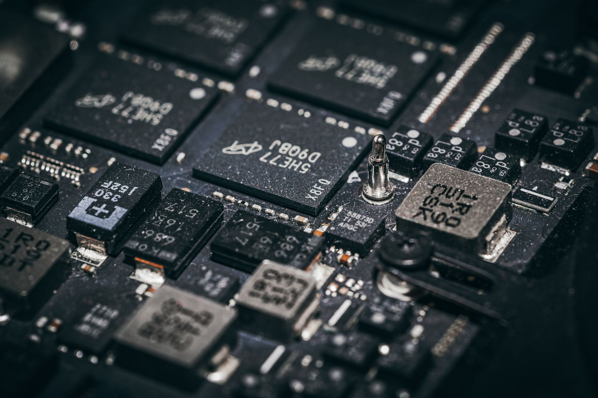

미중 정상 기술 합의 불발, K반도체 안도한 이유

미중 정상이 최근 회담에서 첨단기술 분야 타협 없이 패권 경쟁을 지속하기로 한 것이 확인됐다. 엔비디아의 중국향 H20 칩 판매 재개, 대중 반도체 장비 수출 완화 등 업계가 기대했던 조치는 이번 회담에서 논의되지 않았다.
SK하이닉스는 글로벌 HBM 시장에서 약 53%의 점유율을 보유하고 있다. 미국이 중국을 배제한 AI 공급망을 구축하는 과정에서 HBM 공급자로 한국을 지속 선택할 수밖에 없는 구조 덕분에, 기술 합의 불발이 오히려 한국 반도체에는 단기 호재로 작용한다.
반면 미중 합의가 이뤄졌다면 엔비디아가 다시 중국 시장에 직접 진출하고, SMIC도 첨단 공정 진입 기회를 얻어 한국 기업의 경쟁 우위가 희석됐을 것이다. 중국은 글로벌 AI 칩 시장의 약 20~25%를 차지하는 규모이며, 엔비디아의 H20 판매 미재개로 연간 50억 달러 이상의 기회 손실이 지속되고 있다.
한국 반도체가 미중 패권 전쟁에서 반사이익을 얻는 구조는 취약한 균형 위에 서 있다. 미국이 한국 반도체에 의존하는 것은 자국 내 첨단 생산능력이 부족하기 때문이고, 이 공백이 채워지는 순간(인텔 파운드리 재도약, TSMC 미국 팹 본격 가동) 한국의 협상력은 급격히 낮아질 수 있다.
미중 기술 패권의 진짜 싸움은 AI 칩이 아니라 그 아래 소재·장비·소프트웨어 레이어에서 벌어지고 있다. 한국은 HBM과 파운드리에서 포지션을 유지하고 있지만, AI 칩을 만드는 EDA 소프트웨어는 미국 캐드엔스·시놉시스가 독점하고, 노광 장비는 ASML이 지배한다. 한국이 잡은 부가가치는 전체 AI 공급망의 일부에 불과하다.
SK하이닉스와 삼성전자 반도체 사업부는 HBM·eSSD 수요 증가로 직접 수혜를 받는다. SK하이닉스 HBM3E의 엔비디아 H100·H200 탑재 계약이 유지되면 2026년 HBM 매출은 전년 대비 40% 이상 성장할 전망이다.
미국 반도체 장비·소재 기업들도 수혜를 받는다. 중국이 첨단 공정에 접근하지 못하면 ASML EUV 장비나 어플라이드 머티리얼즈의 증착 장비 수요는 한국·대만·미국 팹 중심으로 계속 집중된다.
SMIC 등 중국 파운드리는 첨단 공정 장비 도입 기회를 다시 잃었다. 현재 SMIC 최첨단 공정은 7nm 수준으로, ASML EUV 없이 3nm·2nm 경쟁은 사실상 불가능하다. 기술 갭이 3~5년 이상 벌어진 채 유지된다.
엔비디아는 중국 시장 재진출 기회를 이번에도 놓쳤다. H20 판매 재개가 안 되면 연간 50억 달러 이상의 기회 손실이 지속되고, AMD·화웨이 어센드가 중국 AI 칩 시장을 잠식하는 시간을 더 주게 된다.
한국 반도체 기업은 미중 화해 시나리오도 반드시 대비해야 한다. 지금의 반사이익 구조는 갈등이 지속되는 한 유효하지만, 정치적 결정 한 번으로 뒤집힐 수 있다. HBM·파운드리 외에 소재·장비·패키징 분야의 독자 경쟁력을 병행 구축해야 한다.
SK하이닉스·삼성전자는 HBM 의존도를 줄이고 시스템반도체(비메모리) 포트폴리오를 강화하는 방향으로 투자를 분산해야 한다. HBM이 아무리 잘 팔려도 AI 칩 설계·EDA·IP 없이는 공급망 하청 구조에서 벗어날 수 없다.
실제 조달 현장에서는 — 미중 관계를 오래 지켜보면서 느끼는 것은, 합의는 언제든 갑자기 온다는 점이다. 2018년 ZTE 제재 완화처럼, 정치적 딜이 되면 하루아침에 규제가 풀린다. 지금 반사이익을 당연시하고 다음 단계 투자를 늦추는 기업은, 미중 화해 시나리오에서 가장 먼저 경쟁력을 잃는다.
이 포스팅은 쿠팡 파트너스 활동의 일환으로 수수료를 제공받습니다.